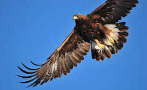

Águila real
 El águila real (Aquila chrysaetos) es un animal emblemático de México y el ave principal del Escudo Nacional. Se distribuye por varios estados del país, principalmente en zonas áridas y montañosas.
Amenazas
El águila real (Aquila chysaetos) está amenazada en México por la caza ilegal, la pérdida de su hábitat, el envenenamiento, la electrocución, y el cambio climático.